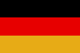

|
Länderinformationen Deutschland
1. Das Wichtigste auf einen Blick2. Sehens- und Hörenswertes
3. Politik & Gesellschaft
4. Schmeckenswertes
5. Medien
6. Reisetipps
1. Wissenswertes
|  | Hier
haben wir die wichtigsten Zahlen und Fakten zu Deutschland
und der deutschen Sprache zusammengetragen. |
Wir freuen uns, dass Sie sich für einen Deutschkurs von Sprachenlernen24 entschieden haben.
Im Folgenden möchten wir Ihnen die deutsche Sprache und die deutsche Kultur ein wenig näher vorstellen. Sie finden in diesem Reiseführer durch Deutschland Wissenswertes, Interessantes und Kurioses über Deutschland, seine Geschichte, das politische System des Landes und die Menschen und ihre Gesellschaft.
Für alle Deutsch-Lernenden, die sich auf den Einbürgerungstest vorbereiten, haben wir hier den Gesamtkatalog der 300 zugelassenen Prüfungsfragen ausgewertet und lesenswert aufbereitet. Aber auch alle, die diese Seiten aus Interesse lesen, finden hier bestimmt viele neue Informationen.
 Die
deutsche Sprache
Die
deutsche Sprache
Rund 105 Millionen Menschen auf der Welt sprechen Deutsch als Muttersprache. Darüber hinaus gibt es viele Millionen, die die deutsche Sprache als Zweit- oder Fremdsprache gelernt haben. So wird geschätzt, dass allein innerhalb der Europäischen Union rund 50 Millionen Menschen deutsche Fremdsprachenkenntnisse besitzen.
Die fleißigsten Deutsch-Lerner sind übrigens in Russland zu finden: Hier sitzen über vier Millionen Menschen über den Büchern und lernen die Sprache. Optimistische Schätzungen gehen sogar davon aus, dass zehn Millionen Russen Deutsch lernen.
Deutsch ist die meist-gesprochene Sprache der Europäischen Union. Eine Amtssprache ist Deutsch nicht nur in der Bundesrepublik Deutschland, in Österreich und der Schweiz, sondern auch in Luxemburg, Liechtenstein, Italien und Belgien. Auch in Brüssel, am Verwaltungssitz der EU, ist Deutsch eine der offiziellen Amtssprachen. In der Verwaltung der Vereinten Nationen (UN) hat Deutsch zudem einen Sonderstatus: Zwar ist es dort weder Amts- noch Arbeitssprache – jedoch werden alle Dokumente immer auch ins Deutsche übersetzt.
Sprachwissenschaftler ordnen Deutsch der Familie der indogermanischen Sprachen zu. Innerhalb der indogermanischen Sprachen rechnet man das Deutsche zu den westgermanischen Sprachen. Eng verwandt ist Deutsch mit dem Niederländischen, dem Englischen, dem Friesischen und dem Jiddischen, denn auch diese Sprachen findet man in der Gruppe der westgermanischen Sprachen.
 Regionale
Amts- und Minderheitensprachen in
Regionale
Amts- und Minderheitensprachen in
Deutschland
Deutschland
In Deutschland besitzen neben der deutschen Sprache auch weitere Sprachen regional den Status einer Amtssprache. Hierzu zählen Dänisch und Friesisch in Schleswig-Holstein, Sorbisch im Südosten Brandenburgs und Nordosten Sachsens sowie Niederdeutsch in Teilen Norddeutschlands. Romani, die Sprache der Sinti und Roma, genießt in Deutschland ebenfalls besonderen Schutz als Minderheitensprache. Sie besitzt allerdings keinen offiziellen Status als Amtssprache.
All
diese Minderheiten- und Regionalsprachen haben gemeinsam, dass die
Zahl ihrer Sprecher recht niedrig ist und kontinuierlich weniger
wird, da sie hauptsächlich von der älteren Generation noch
gepflegt und gesprochen werden.
Die deutsche Gebärdensprache,
die Gehörlosen zur Kommunikation dient, ist heute ebenfalls als
eigenständige Sprache gesetzlich anerkannt.
 Der deutsche Wortschatz –
zahlreiche Einflüsse
Der deutsche Wortschatz –
zahlreiche Einflüsse
Den Wortschatz der deutschen Sprache haben zahlreiche Einflüsse im Lauf seiner Entwicklung geprägt. Zu Beginn seiner Entstehung wurde das Deutsche stark beeinflusst von der lateinischen Sprache. Noch heute lassen sich viele deutsche Wörter auf ihren lateinischen Ursprung zurückführen. Denken Sie hierbei zum Beispiel an das Lateinische fenestra, das zum deutschen Fenster wurde. Neben dem Latein hat auch das Griechische seine Spuren hinterlassen, vor allem bei Begriffen aus der Politik, der Wissenschaft und der Religion hinterlassen. Die deutsche Demokratie kann man beispielsweise von der griechischen δημοκρατία herleiten.
Seit der Zeit des Hochmittelalters wurde Deutsch von der französischen Sprache beeinflusst. Wörter wie Büro, Fassade, Ingenieur oder Zigarette sind aus dem Französischen übernommen worden.
Der Haupteinfluss auf den deutschen Wortschatz im 20 und 21. Jahrhundert stammt aus dem Englischen. Wie in so vielen anderen Sprachen der Welt, mischt sich auch in Deutschland das Englische immer mehr mit der Sprache des Landes. Vor allem im beruflichen Alltag sind Übernahmen aus dem Englischen nicht mehr wegzudenken: Die Deutschen gehen zu meetings, halten deadlines ein, unterwerfen sich dem dresscode der Firma und haben Angst um ihr image.
Interessant ist aber nicht nur die Wörter zu suchen, die in den deutschen Wortschatz eingewandert sind, sondern sich auch mit „ausgewanderten“ deutschen Wörtern zu beschäftigen:
Deutsche Wörter, die
ausgewandert sind
Vor allem zu Beginn des 20. Jahrhunderts sind viele Menschen aus Deutschland ausgewandert. Sie haben dabei nicht nur die deutsche Kultur, sondern auch die deutsche Sprache in fremde Länder getragen. Und so sind auch viele deutsche Wörter in andere Sprachen integriert worden. So treffen Sie beispielsweise in Tschechien auf deutsche Wörter wie papír (Papier), kachel (Kachel) oder regal (Regal). In einem weiteren Nachbarland, in Polen nämlich, finden Sie einen majster (Meister), der Ihnen ein majstersztyk (Meisterstück) anfertigen kann. Aber nicht nur im Handwerk, auch im ganz alltäglichen Gebrauch findet man deutsche Wörter: flaska (Flasche), glanc (Glanz) oder hełm (Helm).
Ein deutsches Wort, das den Sprung in viele andere Sprachen geschafft hat, ist das Wort kaputt. Auf kaputt trifft man im Bosnischen, Kroatischen und Serbischen aber auch im Türkischen, Spanischen, Französischen und Italienischen sowie im Tschechischen verwendet man diesen Begriff ebenfalls.
 Welche Herausforderungen
stellen sich beim
Welche Herausforderungen
stellen sich beim
Deutschlernen?
Deutschlernen?
Wenn Sie Deutsch als Fremdsprache lernen, werden Sie von Anfang an mit den Artikeln der Substantive zu kämpfen haben. Anders als so viele andere Sprachen, ist das Deutsche eine sogenannte „Artikelsprache“. Jedes Substantiv hat ein grammatisches Geschlecht, das man am bestimmten Artikel ablesen kann. Wenn ein Substantiv von einem Adjektiv begleitet wird, so wird dieses Adjektiv im Kasus (dem Fall), im Numerus (der Zahl) und im Genus (dem grammatischen Geschlecht) an das Bezugswort angepasst. Dieses Phänomen ist eines der Hauptkennzeichen des Deutschen und wird als sogenanntes „Kongruenzprinzip“ bezeichnet.
Ein weiteres Kennzeichen des Deutschen, ist die Fähigkeit sehr flexibel neue Wörter bilden und zusammensetzen zu können. Der berühmte Donau-dampfschiff-fahrts-gesellschafts-kapitän sei hier nur als eines der außergewöhnlichsten Beispiele für Wortneuschöpfungen durch Zusammensetzungen (Komposition) genannt. Das Deutsche kann also durch die Kombination von zwei oder mehr unabhängig voneinander vorkommenden Wörtern neue Wörter bilden.
Wer Deutsch lernt, muss auch beim Schreiben-Lernen aufpassen, denn Deutsch wird bei weitem nicht immer so geschrieben, wie es gesprochen wird. Auch an die Groß-und Kleinschreibung, muss man sich als Anfänger bestimmt erst gewöhnen.
All diese Hürden haben Sie aber bereits genommen, wenn Sie diesen Text lesen und verstehen können!
Wir wünschen Ihnen nun eine unterhaltsame und informative Lektüre, wenn wir Ihnen im Folgenden Deutschland und seine Menschen näher vorstellen möchten.
 Einwohner
Einwohner
In Deutschland leben über 82 Millionen Menschen. Über 90 Prozent der Einwohner in Deutschland haben einen deutschen Pass.
Der übrige Teil der Bevölkerung setzt sich zusammen aus Menschen aus der Türkei, aus Italien, Polen, Griechenland oder anderen Ländern der Welt. Das Land, aus dem die meisten Migranten in Deutschland stammen, ist übrigens die Türkei.
Diejenigen Migranten, die ab den 1950er und '60er Jahren von der Bundesrepublik angeworben wurden, werden manchmal auch als Gastarbeiter bezeichnet.
Die allerersten Gastarbeiter, die 1953 nach Westdeutschland kamen, stammten übrigens aus Italien. Danach folgten Migranten aus Spanien, dem damaligen Jugoslawien und Griechenland. Ab den 60er Jahren wurden auch Menschen aus der Türkei, aus Portugal und später auch aus Tunesien, Marokko, Südkorea und den Philippinen angeworben. Im Jahr 1971 war etwa jeder zehnte Arbeitnehmer in Deutschland ein sogenannter Gastarbeiter.
Der Begriff Gastarbeiter wird heute aber eigentlich nicht mehr verwendet – schließlich blieben viele der Menschen hier, ihre Familienmitglieder kamen nach oder sie gründeten hier Familien. So kann man sie und ihre Nachkommen heute kaum mehr als Gäste bezeichnen – vielmehr gehören sie mittlerweile zur deutschen Gesellschaft dazu und viele von ihnen sind heute deutsche Staatsbürger mit einem deutschen Pass.
Im 19. Jahrhundert verließen viele Deutsche aus den unterschiedlichsten Gründen ihre Heimat und wanderten aus. Viele zog es in die Vereinigten Staaten, nach Südamerika (dort vor allen in den Süden Brasiliens und nach Argentinien) und auch in den Südteil Russlands. In Deutschland widmen sich zwei Museen ausschließlich diesem Thema. In Bremerhaven können Sie das Deutsche Auswandererhaus (www.dah-bremerhaven.de) besuchen und in Hamburg die Auswandererwelt Hamburg Ballinstadt (www.ballinstadt.de).
 Fläche
Fläche
Die Bundesrepublik Deutschland erstreckt sich über eine Fläche von 357.021 km². Deutschland liegt damit auf Platz 61 der größten Staaten der Erde. Ähnlich groß wie Deutschland sind Japan, die Republik Kongo und Finnland.
Die Nachbarländer Deutschlands sind: Dänemark, Polen, Tschechien, Österreich, die Schweiz, Frankreich, Luxemburg, Belgien und die Niederlande.
 Die
Bundesländer
Die
Bundesländer
Die Bundesrepublik Deutschland als Staat ist unterteilt in 16 sogenannte Bundesländer.
Das größte Bundesland ist Bayern, ganz im Süden der Republik. Bayern umfasst eine Fläche von 70.500 km². Das kleinste Bundesland ist Bremen mit einer Fläche von 404 km².
Die meisten Deutschen, nämlich 18 Millionen, leben in Nordrhein-Westfalen. Das am dichtesten besiedelte Bundesland ist Berlin, dort leben über 3.800 Menschen auf einem Quadratkilometer Fläche zusammen. Dünn besiedelt dagegen sind Mecklenburg-Vorpommern (74 Einwohner pro km²) und Brandenburg (87 Bewohner pro km²).
Hier finden Sie eine Übersicht über die 16 Bundesländer mit weiteren Informationen. Wir haben immer auch den Internetauftritt des Landes und seiner jeweiligen Hauptstadt verlinkt. So finden Sie schnell weiterführende Informationen:
Die
16 Bundesländer der Bundesrepublik Deutschland |
|||
Bundesland |
Landeshauptstadt |
Einwohnerzahl |
Fläche
(in km²) |
Baden-Württemberg (www.baden-wuerttemberg.de) |
Stuttgart (www.stuttgart.de) |
10.376.000 |
35.750 |
Bayern (www.bayern.de) |
München (www.muenchen.de) |
12.469.000 |
70.550 |
Berlin (www.berlin.de) |
-* |
3.395.000 |
890 |
Brandenburg (www.brandenburg.de) |
Potsdam (www.potsdam.de) |
2.559.000 |
29.480 |
Bremen (www.bremen.de) |
-* |
663.000 |
404 |
Hamburg (www.hamburg.de) |
-* |
1.744.000 |
755 |
Hessen (www.hessen.de) |
Wiesbaden (www.wiesbaden.de) |
6.092.000 |
21.120 |
Mecklenburg-Vorpommern (www.mecklenburg-vorpommern.eu) |
Schwerin (www.schwerin.de) |
1.707.000 |
23.180 |
Niedersachsen (www.niedersachsen.de) |
Hannover (www.hannover.de) |
7.994.000 |
47.620 |
Nordrhein-Westfalen (www.nrw.de) |
Düsseldorf (www.duesseldorf.de) |
18.058.000 |
34.080 |
Rheinland-Pfalz (www.rlp.de) |
Mainz (www.mainz.de) |
4.059.000 |
19.850 |
Saarland (www.saarland.de) |
Saarbrücken (www.saarbruecken.de) |
1.050.000 |
2.570 |
Sachsen (www.sachsen.de) |
Dresden (www.dresden.de) |
4.274.000 |
18.420 |
Sachsen-Anhalt (www.sachsen-anhalt.de) |
Magdeburg (www.magdeburg.de) |
2.470.000 |
20.450 |
Schleswig-Holstein (www.schleswig-holstein.de) |
Kiel (www.kiel.de) |
2.833.000 |
15.800 |
Thüringen (www.thueringen.de) |
Erfurt (www.erfurt.de) |
2.335.000 |
16.170 |
*Anmerkung: Berlin, Bremen und Hamburg sind sogenannte Stadtstaaten. Das Bundesland umfasst das Gebiet der Stadt (bei Bremen zusätzlich noch die Stadt Bremerhaven).
Jedes deutsche Bundesland hat eine eigene Regierung. Der Regierungschef eines Bundeslandes heißt in den meisten Bundesländern Ministerpräsident.
Die
deutsche Nationalhymne
Den Text der deutschen Nationalhymne schrieb der Dichter August Heinrich Hoffmann von Fallersleben. Er lebte von 1798 bis 1874. Hoffmann von Fallersleben lebte als Dichter und Hochschullehrer in Preußen. Er verfasste politische Gedichte, aber auch Kinder- und viele Volkslieder. Eines seiner Werke ist Das Lied der Deutschen. Die dritte Strophe des Gedichts ist heute der Text der deutschen Nationalhymne. Er lautet:
Einigkeit
und Recht und Freiheit
Für das deutsche Vaterland!
Danach
lasst uns alle streben,
Brüderlich mit Herz und
Hand!
Einigkeit und Recht und Freiheit
Sind des Glückes
Unterpfand:
Blüh im Glanze dieses Glückes,
Blühe,
deutsches Vaterland!
Die Musik der Nationalhymne komponierte Josef Haydn (1732-1809). Sie können sich die Nationalhymne aus der Webseite der Bundesregierung anhören. Besuchen Sie dazu die Seite www.bundesregierung.de und geben Sie dort als Suchbegriff „Nationalhymne“ ein.
Kurzer Abriss der neueren deutschen
Geschichte
In diesem Abschnitt präsentieren wir Ihnen eine kurze Übersicht über die neueste deutsche Geschichte. Mit diesen Zahlen können Sie sich auf die Fragen im Einbürgerungstest vorbereiten.
Wir beginnen mit dieser Reise durch die Geschichte am Anfang des 20. Jahrhunderts, denn auch in Ihrem Einbürgerungstest finden Sie nur Fragen, die diesen Zeitraum betreffen. Wenn Sie sich für die Geschichte Deutschlands von ihren Anfängen an interessieren, schlagen Sie doch in der Wikipedia nach. Dort finden Sie viele detaillierte Einträge zu allen Aspekten der deutschen Geschichte (http://de.wikipedia.org/wiki/Geschichte_Deutschlands).
Kurzer Überblick über die neueste
deutsche Geschichte |
|
1914 bis 1918 |
Erster Weltkrieg |
1919 bis 1933 |
Weimarer Republik |
30. Januar 1933 |
Ernennung Hitlers zum Reichskanzler Reichspräsident Paul von Hindenburg ernennt an diesem Tag Adolf Hitler zum Kanzler. Dieser Tag steht symbolisch für das Ende der Weimarer Republik und den Beginn des Nationalsozialismus (auch NS-Zeit genannt) in Deutschland. Dieser Tag gilt auch als Tag der Machtergreifung Hitlers. |
1933 bis 1945 |
Drittes Reich In den nun folgenden Jahren errichteten die Nationalsozialisten unter Adolf Hitler eine Diktatur in Deutschland. Die Nationalsozialisten sollten von 1933 bis 1945 an der Macht bleiben – diese Zeit nennt man auch das Dritte Reich. Im Dritten Reich gab es keine freien Wahlen, die Presse wurde zensiert, Menschen wurden willkürlich verhaftet. Der Nationalsozialismus war geprägt von einem staatlichen Rassismus und einer antisemitischen Ideologie, die zur Verfolgung und Ermordung von sechs Millionen europäischer Juden führte (dem Holocaust). |
9. November 1938 |
Reichskristallnacht/ Reichsprogromnacht
In der Nacht vom 9. auf den 10. November 1938 organisiert das nationalsozialistische Regime die planvolle Zerstörung von Eigentum, Einrichtungen und Leben von jüdischen Bürgern in Deutschland.In dieser Nacht wurden Geschäfte von jüdischen Besitzern verwüstet und geplündert, Synagogen in Brand gesetzt und jüdische Friedhöfe geschändet und zerstört.400 Menschen wurden ermordet und 30.000 Juden in Konzentrationslager verschleppt. Viele Hunderte verstarben dort oder wurden ermordet.Dieser Tag der Reichskristallnacht markiert den Übergang von Verfolgung und Ausgrenzung der Juden hin zu ihrer systematischen Verfolgung und Vernichtung. |
1939 bis 1945 |
Zweiter Weltkrieg |
20. Juli 1944 |
gescheitertes Attentat auf Hitler Am 20. Juli 1944 zündete Claus Schenk Graf von Stauffenberg im Führerhauptquartier in Ostpreußen eine Bombe, die Hitler töten sollte. Das Attentat misslang und Hitler überlebte. Auch der zeitgleich versuchte Staatsstreich scheiterte.Die Gruppe um Graf von Stauffenberg wurde verhaftet und hingerichtet. |
8. Mai 1945 |
Ende des Krieges
Am 8.Mai 1945 (dem Tag der Befreiung) kapitulierte Deutschland bedingungslos und der Zweite Weltkrieg in Europa war zu Ende. Die Zeit nach dem Ende des Zweiten Weltkriegs und der Beginn des Wiederaufbaus des Landes wird in Deutschland als Stunde Null bezeichnet. |
1945 bis 1949 |
Besatzungszeit Nach dem Ende des Zweiten Weltkriegs teilten die alliierten Besatzungsmächte (USA, Sowjetunion, Großbritannien und Frankreich) das Gebiet Deutschlands auf und vier Besatzungszonen entstanden.Die Besatzungszone der USA umfasst den Südosten des Landes. Die Besatzungszone Frankreichs lag im Südwesten des Landes. Im Nordwesten lag die Besatzungszone Großbritanniens. Im Nordosten war die Besatzungszone der Sowjetunion. Die Hauptstadt Berlin war in vier Sektoren unterteilt. |
Juni 1948 bis Mai 1949 |
Luftbrücke nach Berlin Vom Juni 1948 bis zum Mai 1949 wurden die Bürgerinnen und Bürger von West-Berlin durch eine Luftbrücke von Flugzeugen der West-Alliierten versorgt. Ursache hierfür war, dass die Sowjetunion, in deren Besatzungszone Berlin lag, den gesamten Verkehr auf dem Landweg unterbrach. |
April 1946 |
Zwangsvereinigung von KPD und SPD zur SED Im April 1946 wurden in der Sowjetischen Besatzungszone die beiden Parteien KPD und SPD zur Sozialistischen Einheitspartei Deutschlands (SED) zwangsvereinigt. |
23. Mai 1949 |
Grundgesetz tritt in Kraft Am 23. Mai 1949 verkündet der Parlamentarische Rat in Bonn das Inkrafttreten des neu geschaffenen Grundgesetzes. Dieser Tag gilt als Gründungstag der Bundesrepublik Deutschland. |
14. August 1949 |
Wahlen in der Bundesrepublik
Am 14.August 1949 gehen die Menschen in der Bundesrepublik zum ersten Mal nach der Zeit des NS-Regimes zur Wahl und wählen den ersten Deutschen Bundestag. Bei diesen Wahlen schneidet die CDU/CSU am besten ab. |
15. September 1949 |
Adenauer wird erster Bundeskanzler Im September 1949 wird Konrad Adenauer (CDU) zum ersten Bundeskanzler und Theodor Heuss (FDP) zum ersten Bundespräsidenten der Bundesrepublik Deutschland gewählt. |
7. Oktober 1949 |
Gründung der Deutschen Demokratischen Republik (DDR)
Am 7. Oktober 1949 wird in Ostberlin, in der Besatzungszone der Sowjetunion, die Deutsche Demokratische Republik (abgekürzt mit DDR) gegründet. Otto Grotewohl (SED) wird Ministerpräsident und Wilhelm Pieck (SED) wird der erste Präsident der Deutschen Demokratischen Republik.Das Staatsgebiet der DDR umfasst die heutigen Bundesländer Mecklenburg-Vorpommern, Brandenburg, Sachsen, Sachsen-Anhalt und Thüringen, sowie den Ost-Teil der Stadt Berlin.In der DDR hieß das Wirtschaftssystem Planwirtschaft. |
1950er Jahre |
Wirtschaftswunder
Die 1950er Jahre werden in der Bundesrepublik Deutschland als Zeit des Wirtschaftswunders bezeichnet. Nach der Währungsreform 1948 ging es in West-Deutschland rapide aufwärts. Bis zum Ende der 50er Jahre schaffte es die Bundesrepublik die zweitstärkste Wirtschaftsnation (nach den USA) zu werden. |
17. Juni 1953 |
Volksaufstand in der DDR In der DDR hatte das Zentralkomitee der SED beschlossen die Arbeitsnormen zu erhöhen. Die Arbeiter sollten für den gleichen Lohn mehr arbeiten. Das führte zu Protesten im ganzen Staatsgebiet. Überall streikten die Arbeiter und schlossen sich zu Großdemonstrationen zusammen.Als Reaktion auf den Aufstand rief die Sowjetunion den Ausnahmezustand aus und übernahm wieder die Führung der DDR. Es folgte eine Welle von etwa 6.000 Verhaftungen im ganzen Land. |
1955 |
Gründung des Warschauer Pakts 1955 schlossen sich acht Staaten des Ostblocks (unter ihnen auch die DDR) unter der Führung der Sowjetunion zum sogenannten Warschauer Pakt zusammen. Dieses Militärbündnis war während des Kalten Krieges der Gegenspieler der NATO. |
1957 |
Gründung der Europäischen Wirtschaftsgemeinschaft;
Römische Verträge 1957 wurde die Europäische Wirtschaftsgemeinschaft (EWG) gegründet. Gründungsmitglieder waren die Staaten Frankreich, Italien, die Niederlande, Belgien und die Bundesrepublik Deutschland. Aus dieser Wirtschaftsgemeinschaft ging 1993 die Europäische Union (EU) hervor. Deutschland ist somit ein Gründungsmitglied der EU.Die Verträge, die man an diesem Tag in Rom unterzeichnet hat, heißen „Römische Verträge“. |
1961 |
Bau der Berliner Mauer und Teilung Berlins
1961 errichtete die DDR die sogenannte „Berliner Mauer“. 167 Kilometer Betonmauer und Grenzstreifen schlossen von nun an den Westberliner Teil der Stadt ein und schotteten ihn vom Staatsgebiet der DDR ab. Berlin war für die nächsten 28 Jahre eine geteilte Stadt. Gleichzeitig wurden entlang der innerdeutschen Grenze ebenfalls hohe Zäune und Grenzbefestigungen errichtet. Für die Bürger der DDR war es somit so gut wie unmöglich, in die Bundesrepublik zu reisen. |
7. Dezember 1970 |
Warschauer Kniefall Am 7. Dezember 1970 unterzeichnete Willy Brandt in Warschau den sogenannten Warschauer Vertrag zwischen Polen und der Bundesrepublik Deutschland. Nach der Unterzeichnung legte Brandt vor dem Ehrenmal des ehemaligen jüdischen Ghettos in Warschau einen Kranz ab. Nachdem er den Kranz hingelegt hatte, kniete er vor dem Ehrenmal nieder. Mit dieser symbolischen Geste bat Willy Brand Polen und die polnischen Juden um Vergebung für die Verbrechen der Nationalsozialisten. |
Herbst 1989 |
„Die Wende“
Die Zeit im Herbst 1989 nennt man in Deutschland Wende-Zeit. In dieser Zeit zerfällt die Diktatur der DDR und demokratische Reformen werden eingeleitet. |
Oktober 1989 |
Montagsdemonstrationen Vor allem in Leipzig zogen an den Montagen im Oktober 1989 zehntausende Bürger der DDR durch die Innenstadt, um gegen das DDR-Regime zu protestieren. |
9. November 1989 |
Fall der Berliner Mauer |
3. Oktober 1990 |
Tag der Deutschen Einheit
Am 3. Oktober 1990 tritt die DDR dem Geltungsbereich des Grundgesetzes bei und Deutschland ist wieder vereinigt.Heute feiern die Deutschen an jedem 3. Oktober diesen Tag als Nationalfeiertag. Die Wiedervereinigung Deutschlands ereignete sich während der Zeit Helmut Kohls als Bundeskanzler. Helmut Kohl wird deswegen oft als „Kanzler der Deutschen Einheit“ bezeichnet. |
2. Dezember 1990 |
Erste gesamtdeutsche Wahlen
Am 2. Dezember 1990 finden die ersten gesamtdeutschen Wahlen im wiedervereinigten Deutschland statt. Helmut Kohl wird als Kanzler wiedergewählt. |
 Währung
Währung
Seit dem 1.Januar 2002 bezahlt man in Deutschland mit dem Euro. Ein Euro ist unterteilt in 100 Cent.
Die Banknoten des Euro sind in allen Ländern identisch, die diese Währung ebenfalls eingeführt haben (neben Deutschland sind das derzeit 20 weitere europäische Staaten). Es sind Euro-Scheine im Wert von 5, 10, 20, 50, 100, 200 und 500 Euro im Umlauf.
Die Münzen des Euro haben in ganz Europa die gleiche Vorderseite. Jedes Land der Währungsunion aber bedruckt die Rückseite der Münzen nach seinen eigenen Vorstellungen und Wünschen. In Deutschland finden Sie auf der Rückseite der 1-, 2- und 5-Cent-Münzen das Eichenlaub. Dieses Symbol kennen die Deutschen noch von ihrer alten Währung, der D-Mark. Dort war das Eichenlaub auch schon auf den Pfennig-Münzen abgedruckt. Die Rückseiten aller 10-, 20- und 50-Cent-Münzen zeigen das Brandenburger Tor – das Wahrzeichen der Hauptstadt Berlin. Auf der Rückseite der 1- und 2-Euro-Münzen schließlich sehen Sie den deutschen Bundesadler. Der Bundesadler ist das Staatswappen der Bundesrepublik Deutschland.
 Ökonomische Situation
Ökonomische Situation
Die deutsche Wirtschaft ist eine soziale Marktwirtschaft. Unter diesem Begriff versteht man, dass der deutsche Staat nur den Rahmen für die Wirtschaft und die Firmen in Deutschland vorgibt, aber keine konkreten Bestimmungen oder Einschränkungen macht.
Deutschland ist eine der größten Volkswirtschaften der Welt. Viele der in Deutschland hergestellten Waren und Güter werden ins Ausland exportiert. Deutsche Firmen exportieren ihre Waren vorwiegend nach Frankreich, in die USA, nach England, Italien und in die Niederlande. Wegen der hohen Ausfuhren wird Deutschland auch als „Exportweltmeister“ bezeichnet.
Diese Erfolge im Außenhandel dürfen aber nicht darüber hinwegtäuschen, dass Deutschland seit den 1980er Jahren mit wirtschaftlichen Problemen und einer hohen Arbeitslosigkeit zu kämpfen hat. Insgesamt geht es den meisten Menschen in Deutschland allerdings wirtschaftlich immer noch sehr gut.
 Staat und Steuern
Staat und Steuern
Der deutsche Staat finanziert einen großen Teil seiner Ausgaben über Steuern. In Deutschland werden unterschiedliche Arten von Steuern erhoben: Jeder fest Angestellte zahlt in Deutschland sogenannte Sozialabgaben.
Das deutsche Steuersystem gilt als besonders kompliziert und es gibt eine Vielzahl unterschiedlicher Steuern. So muss man beispielsweise sogar seinen Hund bei seiner Kommune anmelden und für ihn Steuern zahlen.
Das soziale Netz in Deutschland
In Deutschland gibt es verschiedene Versicherungen, die für alle Bürger verpflichtend sind. Diese sind: Die Rentenversicherung, die Krankenversicherung, die Arbeitslosenversicherung, die Unfallversicherung und die Pflegeversicherung. Mit diesen sogenannten Sozialversicherungen sorgt der Staat dafür, dass jeder Bürger im Notfall abgesichert ist. Dieses soziale Netz in Deutschland ist einmalig und ein Vorbild für viele andere Staaten.
 Infrastruktur
Infrastruktur
Was seine Infrastruktur angeht, ist Deutschland einmalig gut erschlossen. Über 12.500 Kilometer Autobahnen verbinden die deutschen Großstädte. Als erste Autobahn der Welt gilt übrigens die 1921 in Berlin eingeweihte AVUS (Automobil-Verkehrs- und Übungs-Straße). Fast 41.000 Kilometer Landstraßen verknüpfen auch die kleineren Städte miteinander und binden sie an die Großstädte an.
Dieses gut aufgebaute Netz von Straßen hat dazu geführt, dass in den letzten Jahrzehnten immer mehr Autos fahren und immer mehr Waren und Güter auf den Straßen transportiert werden. 2005 wurde aus diesem Grund in Deutschland eine Mautgebühr für LKWs eingeführt.
Das Schienennetz in Deutschland ist ebenfalls gut ausgebaut. Leider aber wurden in den letzten Jahren viele kleinere Bahnlinien stillgelegt und die Menschen, die an diesen Orten wohnen, sind nun gezwungen mit dem Auto zu fahren. Bahnfahren in Deutschland ist im europäischen Vergleich relativ teuer.
In Deutschland gibt es über 400 Start- und Landebahnen für Flugzeuge. Der größte Flughafen Deutschlands (und der drittgrößte in ganz Europa) ist der Flughafen in Frankfurt am Main. Der zweitgrößte deutsche Flughafen ist der in München und in Berlin wird gerade ein neuer, großer Flugplatz gebaut.
Die großen und wichtigen Häfen in Deutschland sind die Häfen in Hamburg, Wilhelmshaven und Bremen/Bremerhaven. Auch die Binnenschifffahrt in Deutschland ist gut ausgebaut. Schiffe können auf der Donau, auf dem Main, der Weser und der Elbe fahren.
Nach diesem Kapitel über die Sprache und die grundlegenden Informationen über das Land, möchten wir Sie im nächsten Abschnitt einladen zu einer kleinen Reise durch Deutschland. Dort haben wir einige ausgesuchte Reiseziele versammelt und stellen Ihnen Sehens- und Hörenswertes vor.